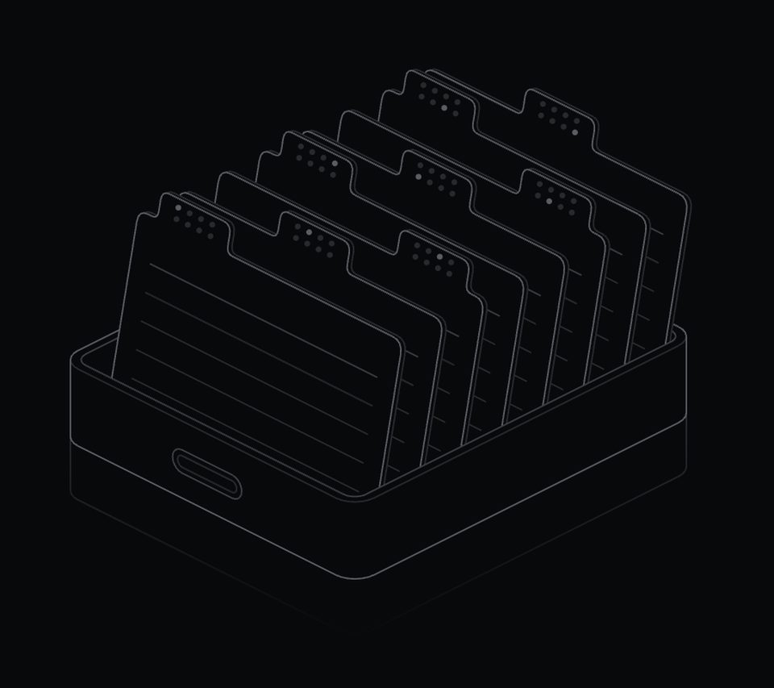
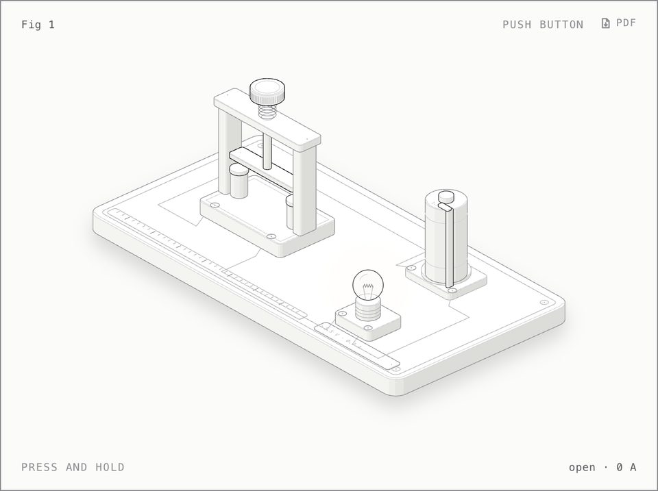
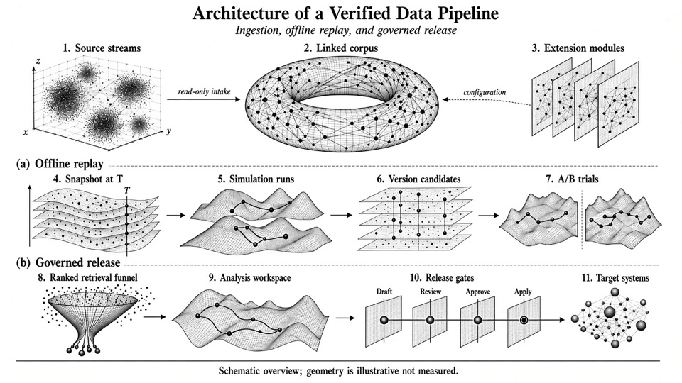
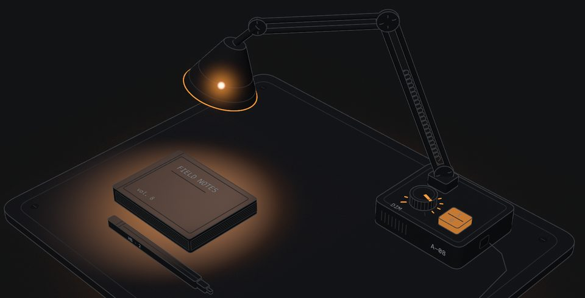
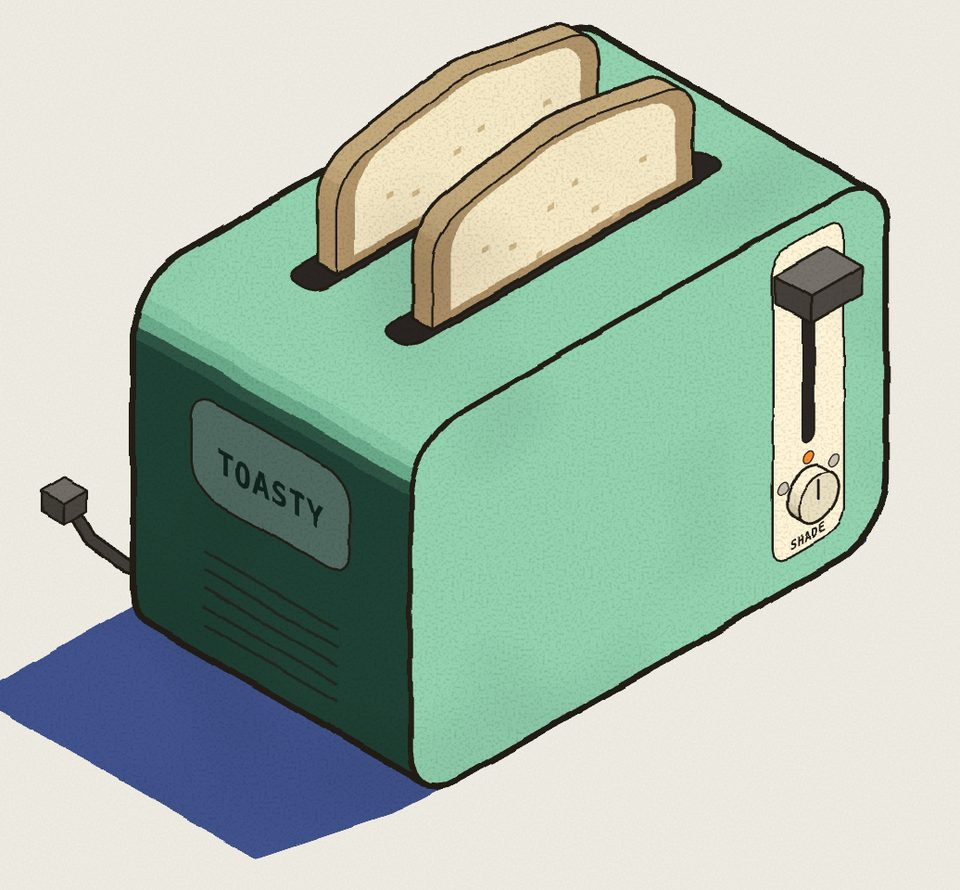
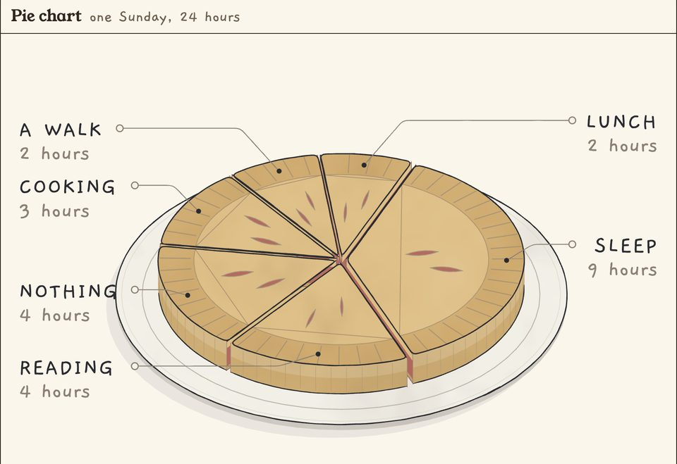
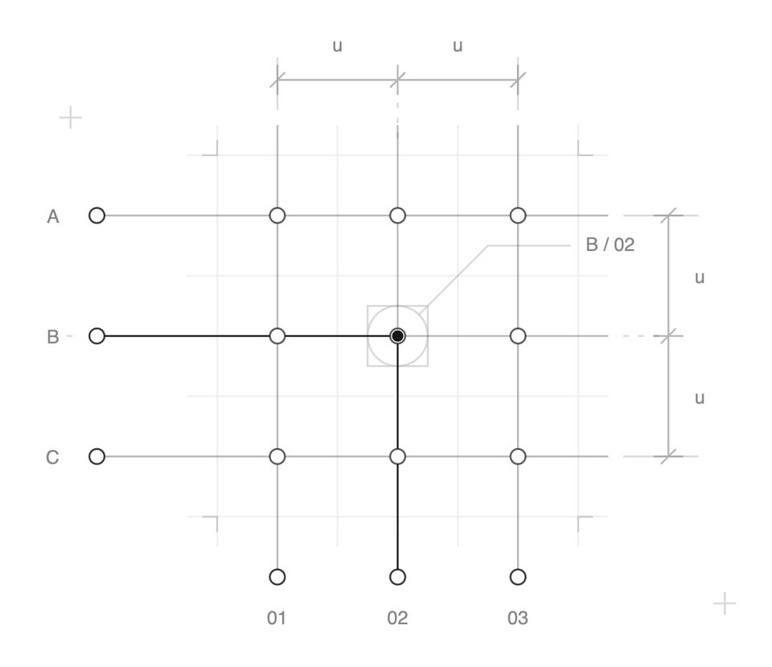

Hairline
Restrained isometric line art; one geometric idea responds to the pointer.
Lucas Marques · sample: Riffle
One sample per treatment, taken from each author’s own bundled examples. Pick the look that fits your subject and medium, then ask for that treatment by name. Interactive treatments respond to the pointer; a still only shows their look.

Restrained isometric line art; one geometric idea responds to the pointer.
Lucas Marques · sample: Riffle

Detailed physical mechanisms that explain technical ideas through moving parts and a shared model.
Ryan · sample: Push button

Monochrome scientific plates, wireframes, stippled charts and research posters.
Brooklyn Nicholson · sample: Reference plate
Evidence-led technical illustrations, coherent views and exploded assemblies of objects or conceptual layers.
Jakub Krehel

Glowing isometric line art, interactive 3D objects, or solid-lit Lumen illustrations.
April Zhu · sample: Desk lamp

Colourful, hand-inked objects with working mechanisms, rotation and see-through views.
April Zhu · sample: Toaster

Hand-drawn charts where subject objects carry the data, with values drawn to scale and touchable parts.
April Zhu · sample: Pie chart

Flat monochrome blueprint drawings where one construction relationship explains a product idea, as editable SVG.
Pasquale Vitiello · sample: SYS-02